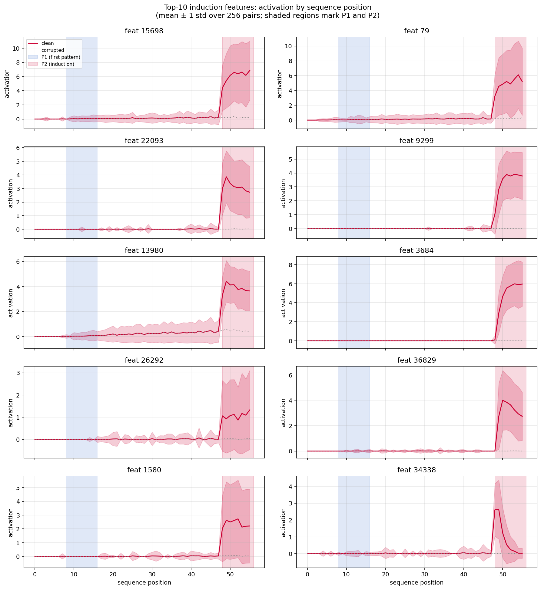

Sparse Autoencoders on State Space Models
A controlled cross-architecture study at 2.8B scale, plus a mechanistic localization of the attention-free induction circuit in Mamba-1.
Three findings
Trained TopK sparse autoencoders on activations from Mamba-1, Mamba-2, and Pythia at matched 2.8B-parameter count, on 10M Pile tokens, with layer / K / expansion sweeps. Used them to compare feature geometry across architectures and to reverse-engineer where Mamba performs attention-free induction.
Transformers concentrate feature-level representation while distributing the induction circuit across multiple heads; Mamba-1 distributes features more uniformly but concentrates induction into one 16-dim readout. The contrast is the finding.
Methods
Models & data
| Model | Architecture | Layers | d_model |
|---|---|---|---|
| Mamba-1 2.8B | Selective-scan SSM | 64 | 2560 |
| Mamba-2 2.7B | State-space duality (SSD) SSM | 64 | 2560 |
| Pythia 2.8B | Transformer (GPT-NeoX) | 32 | 2560 |
All three pretrained on The Pile and matched on parameter count and d_model. Pretraining-token budgets and total compute differ across the three (per published model cards), so — while architecture is the primary variable being compared — it is not the only variable. Mamba-1 has 2× the layer count of Pythia at the same d_model; per-layer comparisons should be read with that in mind. 10M Pile tokens used for SAE training, matching the pretraining distribution.
SAE recipe
- Architecture: TopK SAE (Gao et al. 2024) with AuxK loss and dead-feature resampling.
- Activations: per-dimension normalized (subtract mean, divide by std). Standard preprocessing for cross-architecture SAE comparison; a raw-activation control motivating this choice is in §1a.
- Default: K=64 active features, 16× expansion (40,960 features), 30K training steps.
- Sweeps: K ∈ {32, 64, 128}, expansion ∈ {8×, 16×, 32×}, 8 layer depths per model.
1. Cross-architecture feature geometry
1a. Normalization is a methodological prerequisite
Without per-dimension normalization, Pythia SAEs catastrophically diverge at middle layers while Mamba trains normally:
| Pythia layer | FVE (raw) | FVE (normalized) |
|---|---|---|
| L4 | −5.71 | 0.79 |
| L8 | −9.51 | 0.72 |
| L12 | −9.92 | 0.70 |
| L16 | −6.90 | 0.72 |
Root cause: Pythia's per-dimension activation variance grows 55× from L0 (0.13) to L28 (7.2); Mamba's grows much less. The SAE encoder's learned bias never converges at those Pythia scales. PCA at matching dimensionality explains >80% of variance on the same activations, so they are decomposable — the SAE training just diverges.
Implication for the field
Cross-architecture SAE studies must normalize or per-layer FVE comparisons are confounded by activation scale. Earlier published transformer-SAE middle-layer results that did not normalize may be unreliable.
After normalization, all three architectures achieve FVE in the same 0.63–0.97 range with similar U-shaped layer curves. Sparse decomposability is architecture-insensitive; what differs is how features are used.
1b. Participation ratio — Pythia concentrates 8× more at middle depth
Participation ratio measures effective dimensionality of the representation:
PR = 1 when all variance concentrates in one feature; PR = N when spread uniformly across N features.
| Depth | Mamba-1 PR | Pythia PR | Ratio |
|---|---|---|---|
| Early (L0/L0) | 8,400 | 5,681 | 1.5× |
| Middle (L32/L16) | 5,760 | 674 | 8.5× |
| Late (L56/L28) | 1,449 | 438 | 3.3× |
Pythia's effective dimensionality drops 13× from early to late; Mamba-1's drops only 6×. Despite comparable reconstruction quality, Pythia packs the same information into far fewer high-variance features.
Depth confound — addressed
Mamba-1 has 64 layers vs Pythia's 32, so per-layer comparisons could in principle be confounded by depth. The naive depth-burden prediction goes the opposite direction of what's observed: if Mamba simply spread the same total work across twice as many layers, per-layer PR should be lower than Pythia's, not 8× higher. The middle-layer gap is therefore unlikely to be a layer-count artifact — it points at an architectural difference in how features are packed per layer.
1c. Causal confirmation — Pythia features are 1.75× more leverage
Ablated the top-100 SAE features one at a time and measured KL divergence on model output distribution:
| Metric | Mamba-1 | Pythia | Ratio |
|---|---|---|---|
| Mean per-feature KL | 0.230 | 0.403 | 1.75× |
| Top-10 mean KL | 0.247 | 0.416 | 1.69× |
| Features with KL > 0.1 | 100/100 | 100/100 | — |
Consistency check: per-feature vs. per-layer
Pythia features are 1.75× more causal individually, but a whole-layer ablation is ~25× more damaging on Mamba-1 than Pythia (PPL ratio 12,000 vs 475). The PR × mean-per-feature-KL product (a heuristic, not a strict identity — per-layer ablation uses PPL on a different loss surface) gives ~5× higher for Mamba: directionally compatible with the per-layer result. The two metrics agree on sign and on which architecture has higher total layer-level damage; they should not be interpreted as an exact decomposition.
2. Mamba-1's induction circuit localizes to 16 dims at L30
2a. Question & method
Transformer induction (Olsson et al. 2022) is executed by a previous-token head → induction head pair across two attention layers. Mamba-1 has no attention but does induction behaviorally (Arora et al. "Zoology"). Where inside the mixer block is this computation actually done?
Activation patching on synthetic induction pairs (length 56, uniformly random tokens, 128 pairs):
corrupted: [prefix 8] P(8) [mid 32] P'(8) (different second pattern)
Top-10 induction features identified from the L32 SAE by mean_pair[z_clean − z_corrupted] at the last 8 (induction) positions. Metric:
Direction: patched = run starting from the clean sequence with corrupted activations spliced in at the target site (necessity test — "is this site needed?"). Sufficiency uses the reverse splice and is reported as the blue bars in §2c.
Patching sweep: every (layer, submodule) in {in_proj, conv1d, x_proj, dt_proj, out_proj_in} × {L2, L4, ..., L28, L30, L31, L32} — 5 submodules × 17 layers = 85 sites.
2b. Layer × submodule sweep: only L30 x_proj is causal


x_proj patch_damage by layer. ~0 through L26, jumps to 0.19 at L28, then 0.83 at L30 — the induction computation emerges sharply between L28 and L30. L31/L32 contribute ≤ 0.06.
x_proj, in_proj, and out_proj_in; restricting to pre-induction positions gives 0.00. L30 is induction-specific, not generic. (conv1d is the exception — it carries short-range context.)2c. Inside x_proj: the entire signal is in the 16-dim C matrix
Mamba-1's x_proj is a Linear(5120 → 192) that produces:
Δ_pre: 160 dims — feedsdt_projthen the SSM time-stepB: 16 dims — state-space input matrix (writes to state)C: 16 dims — state-space output matrix (reads from state)
Patching each slice individually at L30:
| Slice | Dim | patch_damage | Next-token logit damage |
|---|---|---|---|
| full x_proj | 192 | +0.833 | +0.475 |
| Δ_pre | 160 | +0.012 | 0.000 |
| B | 16 | +0.002 | 0.000 |
| C | 16 | +0.800 | +0.475 |

Mechanistic reading. Selective scan runs ht+1 = Ā(Δ)·ht + B·xt and yt = C·ht. Induction requires reading the accumulated state, not writing to it — the match signal is encoded in the product C · h. Earlier layers write pattern memory into h; at L30, C becomes a query that selects which state-component to project back to residual. The slice carrying the signal is 16 of 192 dims of L30's x_proj output (8.3%), or equivalently 16 of 2560 residual dims at that one layer (0.6%).
⚠ This isn't just "smaller slice = bigger effect"
Δ_pre is 160 dims — 10× larger than C — from the same submodule output at the same layer, and gives +0.012 damage (noise floor). If sharpness were a structural artifact of patching a small-dim slice, Δ would show an intermediate signal and B (also 16 dims) would look like C. Instead: only C is causal. The Mamba-2 cross-architecture control below makes this airtight.
2d. Scaling: the C-matrix locus reproduces below 2.8B

2e. End-to-end picture: a second SAE on the pre-x_proj representation
Trained a second TopK SAE inside L30, on the x_proj input (d_inner = 5120; 8× expansion, K=64). Scoring every internal feature by (clean − corrupted) at induction positions yields ~10 sparse features in the d_inner space that fire on pattern matches. Three of them (features 2230, 18334, 5252) fire at activation 3–8 on clean and < 0.002 on corrupted — dedicated induction detectors in the pre-readout space.
Comparing the same SAE recipe at L28 vs L30 (where x_proj patch_damage jumps from 0.19 to 0.83): top feature score grows 27% but the 2nd through 4th features grow 3–4× (L28 ranks 2–4: 1.97/1.76/1.56; L30: 7.65/6.34/6.32). The induction circuit isn't fully formed at L28; by L30 a small bank of dedicated features is in place.
Putting it together — layers 0–29 accumulate pattern memory in the SSM state h; at L30 a small set of pre-x_proj features fire on matched patterns; those features project through the 16 rows of C; selective scan y = C·h reads the matched component out to residual; L32 has a separate set of "induction-complete" features. Two SAEs at two sites of the same pipeline both recover sparse coding of the same circuit.
3. Representation vs. computation: the linear probe says Δ; patching says C
Trained logistic regressions (5-fold CV, 512 induction pairs) to predict clean vs. corrupted from each x_proj slice — a representational decodability test, orthogonal to the causal patching test:
| slice | dim | probe accuracy | patch_damage |
|---|---|---|---|
| Δ_pre | 160 | 97.7% ± 0.4% | +0.012 |
| B | 16 | 54.1% | +0.002 |
| C | 16 | 57.5% ± 0.5% | +0.800 |
| full x_proj output | 192 | 97.8% | +0.833 |
| random 16 dims of d_inner | 16 | 83.5% | — |
The inverse of the patching result. Δ_pre has 97.7% linear decodability but is causally inert; C has only 57.5% decodability but carries the entire causal effect.
Methodological takeaway
Linear probes measure where information is encoded in a linearly-readable form, not where it is used. A naive interpretability pipeline — "probe everything, declare where the probe works the locus of the mechanism" — would have pointed at Δ_pre and been wrong by 68×. C is not a pattern detector; C is a readout direction. The match signal exists only in the product C · h, not in C alone. Causal interventions and representational probes answer different questions; the literature should not conflate them.
Natural-text generalization

4. Pythia-2.8B control: distributed across four attention layers

Concentration gap
| Mamba-1 | Pythia-2.8B | Ratio | |
|---|---|---|---|
| Max single-site patch_damage | 0.833 | 0.365 | 2.3× |
| Sites with patch_damage ≥ 0.5 | 4 (all L30) | 0 | — |
| Per-dim logit damage (Mamba C vs Pythia QK) | 0.030/dim | 0.00005/dim | ~600× |
Splitting Pythia's attention.qkv into per-head Q / K / V: L6 K = +0.315, L6 Q = +0.313 (symmetric, as expected — breaking either destroys the Q·KT match). No single 16-dim slice carries the bulk of the signal; the largest sites are 0.365 (L10 attention) and 0.315 (L6 K), with the rest of the heatmap below ~0.30. The localization is qualitatively distributed across multiple middle attention layers rather than concentrated in one.
Transformers distribute; Mamba-1 concentrates. This contradicts the architecture-level feature-geometry finding above (Mamba distributes features, Pythia concentrates them) — and intentionally so: for this specific circuit, the pattern reverses, because Mamba has no general-purpose routing operation and is forced to exploit its one 16-dim state-readout.
5. Mamba-2 (SSD) control: the story does not transfer
Mamba-2 replaces selective scan with state-space duality (SSD), merging projections into a single in_proj outputting [z, x, B, C, dt]. Same 16-dim C matrix, same SSM formulation, same state dimensions. Critical control for the headline.
| baseline act | corrupted act | gap | |
|---|---|---|---|
| Mamba-1 (L32 SAE, plen=8) | 3.33 | 0.10 | 3.23 |
| Mamba-2 (L32 SAE, plen=8) | 0.47 | 0.25 | 0.22 |

Pattern-length sweep on Mamba-2: gap grows from 0.16 (plen=4) to 0.27 (plen=32), never approaching Mamba-1's 3.23. Not an artifact of short patterns.
Caveat — SAE coverage on Mamba-2
The Mamba-2 SAE was not multi-seed-validated the way Mamba-1 was (§7 D), so a residual concern is that the small clean−corrupted gap on Mamba-2 partly reflects the SAE failing to capture induction features rather than Mamba-2 doing less induction. Two reasons to think this isn't the whole story: (1) the per-slice patching shape (B and C indistinguishable; signal spread across z/x/B/C) is independent of absolute gap magnitude — even within the small gap that does exist, no concentration emerges; (2) Arora et al. Zoology shows SSD-Mamba-2 underperforms selective-scan Mamba-1 on in-context recall behaviorally — same conclusion via a methodology that doesn't depend on SAE quality.
What this rules out
Mamba-2 has the same 16-dim C matrix as Mamba-1. If the Mamba-1 sharpness were a structural artifact of patching a small slice in a selective-scan-shaped mixer, it would replicate here. It doesn't. Mamba-2's C and B are indistinguishable in causal effect (0.19 vs 0.20). Selective scan specifically — not the SSM family — is what produces the concentrated induction locus.
Triangulation with independent literature: Arora et al. 2023, Zoology: Measuring and Improving Recall in Efficient Language Models (arxiv 2312.04927), show SSD-style Mamba-2 underperforms selective-scan Mamba-1 on in-context recall benchmarks behaviorally. Two methodologies (behavioral benchmark vs. mechanistic patching), one conclusion.
6. Crosscoder: 99.6% of features are shared between Mamba and Pythia
Trained a crosscoder (Lindsey et al. 2024 style) — a single TopK SAE with a shared encoder over concatenated [x_mamba_L32, x_pythia_L16] at matched-token positions, with separate decoders for each model. 5M Pile tokens, 40,960 features, K=64, 20K steps. A feature is "shared" if both decoders give it non-trivial weight; otherwise model-specific.
| FVE | |
|---|---|
| Reconstruction of Mamba-1 L32 residual | 0.66 |
| Reconstruction of Pythia L16 residual | 0.73 |
| Feature category | count / 40,960 |
|---|---|
| Shared features (contribute to both reconstructions) | 40,807 (99.6%) |
| Mamba-only features | 10 (0.02%) |
| Pythia-only features | 143 (0.35%) |
The universality reading
At the residual-stream level, Mamba-1 and Pythia encode an essentially complete shared dictionary of semantic concepts. The architectural difference (selective scan vs. attention) shows up in how features are routed and read out (§1, §2, §4) but not in which features get represented. Combined with the SAE-CKA = 0.80 across architectures (vs. raw-activation CKA ≈ 0.02 at the same depth), this is the strongest universality signal in the project.
7. Validation: survives pressure testing
A. Null-patching (pipeline sanity)
Patch clean→clean at every top site. Result: 0.0000 exactly at L30 x_proj, L30 conv1d, L30 in_proj, L32 in_proj. Pipeline is numerically sound.
B. Random-feature baseline
Activation on induction pairs: random features = 0.005, induction features = 3.36 — 700× gap. Damage is on real signal; random-feature "damage" is noise amplified by tiny denominator.
C. Multi-seed feature stability
Re-identified top-10 induction features with 5 different random seeds (128 pairs each). Identical feature set, pairwise Jaccard = 1.00. Feature identities are not an artifact of pair sampling.
D. SAE hyperparameter robustness
Re-ran with 5 Mamba-1 L32 SAEs — K ∈ {32, 64, 128}, expansion ∈ {8×, 16×, 32×}. L30 x_proj damage ∈ [0.69, 0.84] (median 0.78). The headline 80% / 47.5% are the canonical K=64, 16× setting; C-only damage was not separately swept, so x_proj robustness is the parent proxy for the C slice. Top-10 feature index sets differ almost entirely across SAEs (Jaccard ≈ 0), but the causal locus is invariant.
Limitation: "different feature IDs, same locus" is consistent with both same direction relabeled and genuinely different features projecting through the same locus. Distinguishing them requires decoder-cosine alignment across SAEs, which was not run. The robustness claim here is on the locus, not on feature identity.
E. Natural-text generalization
Streamed 400 Pile documents. Found 26,807 positions where a bigram had occurred ≥32 tokens earlier. Top-10 induction features fire 5.4× higher on mean at those positions vs. random baselines. All 10 features ≥ 2× activation ratio on real repeats.
F. Long-range gap (up to 512 tokens)
Activation ratio stays 2.3–3.3× across gap bins 16–512 tokens. Induction survives ranges well beyond training-stimulus conditions.
G. Max-activating natural-text examples (qualitative)
| feat | act | context (→ = max-activating token) |
|---|---|---|
| 13980 | 6.03 | ...crackdown. "Oh! Thsupra shoes supra shoes, thsupra shoes supra shoes the → [` shoes`] |
| 36829 | 15.11 | ...CT-based cup insertion, and all had postoperative CT. After CT-based cup placement, average → [` cup`] |
| 13980 | 5.68 | ...$1 = foo $2 = bar1 $3 = bar2 $4 → [` bar`] |
| 34338 | 14.72 | ...sewing machines and vacuums. Please contact → [`ums`] |
Features identified from uniform-random synthetic patterns fire exactly on natural induction events in Pile text — repeated tokens, reused names, template-matching. Verifies semantic grounding.
H. Position specificity

8. Take-home
- Sparse decomposability transfers to SSMs. With normalization, Mamba-1, Mamba-2, and Pythia reach FVE in the same 0.63–0.97 range. Whether SSM activations are sparsely decomposable is no longer an open question.
- Architecture-level feature geometry differs sharply. At middle relative depth, Pythia packs 8× more variance into its dominant features (PR); each Pythia feature has 1.75× more single-feature causal leverage. Per-layer comparison; the gap goes opposite the naive depth-burden prediction so it is not a layer-count artifact.
- Mamba-1 does attention-free induction in 16 dimensions. The L30 C-matrix slice — 8% of
x_proj's output at L30 — carries 80% of induction-feature signal and 47.5% of next-token logit, an unusually concentrated mechanistic localization at this scale. - Representation ≠ computation. A linear probe says the information is in Δ (97.7%); patching says the causal machinery is in C (57.5% decodable but 80% causal). Methodological cautionary tale for the broader literature.
- Specificity to selective scan, not to SSMs. Mamba-2 (SSD) shows 15× weaker induction with B and C causally indistinguishable; converges with Arora et al. "Zoology" behaviorally. The C-matrix locus is a property of selective scan in particular.
- The C-matrix locus reproduces below 2.8B. Mamba-130M shows the same C-matrix peak at L15 (28% of the clean−corrupted gap). Not n=1.
- Universality at the feature level. A crosscoder over Mamba-1 L32 and Pythia L16 finds 99.6% shared features (40,807/40,960). Architectures differ in how features are routed and read out, not in which concepts get encoded.
- Productive reversal. Architecture-level feature geometry: Mamba distributes, Pythia concentrates. For the specific induction circuit, the pattern reverses: Mamba concentrates into 16 dims at one layer; Pythia spreads the signal across multiple middle attention layers (max single-site 0.365). Articulating why (Mamba lacks a general routing operation and is forced onto its one 16-dim state-readout) sharpens the contrast rather than undermining it.